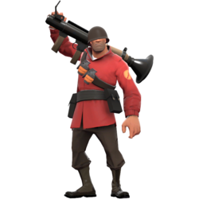

TF2 has 9 playable classes divided into 3 categories: Offense, Defense, and Support. All brief descriptions are from the official Team Fortress Wiki, which includes more details on each class.
Offense
Scout

The Scout is a fast-running mercenary from Boston, Massachusetts. His speed is the fastest of the 9 classes, and he is the only one who can double jump. By default, he carries a scattergun, a pistol, and a baseball bat. His fast and agile character makes him great for capturing the intelligence in Capture the Flag. However, the Scout, along with the Engineer, Sniper, and Spy, has the lowest health among all the classes
The Scout is voiced by Nathan Vetterlein.
Wiki: https://wiki.teamfortress.com/wiki/Scout
Soldier
The Soldier is a jingoistic patriot from the Midwest, USA. His default loadout includes a rocket launcher, a shotgun, and a shovel. He has the second-highest health in the game, and at the cost of some health, he can even use his launcher to rocket jump much higher than the Scout's double jump. Although he is the second slowest class in the game, the Soldier is one of the best classes for beginners.
The Soldier was voiced by the late Rick May. He was voiced by May and Nolan North in Expiration Date.
Wiki: https://wiki.teamfortress.com/wiki/Soldier
Pyro
The Pyro is a pyromaniac of unknown origin who sees the world as a utopian fantasy called "Pyroland." Pyro is given a flamethrower, a shotgun, and a fire axe by default. When lit on fire, enemies start taking damage after time from afterburn. The flamethrower can also be used to extinguish teammates or deflect projectiles with a compression blast. The Pyro's main weakness is that their flamethrower only works at close range.
The Pyro is voiced by Dennis Bateman.
Wiki: https://wiki.teamfortress.com/wiki/Pyro
Defense
Demoman

The Demoman is an alcoholic demolitions expert from Ullapool, Scotland, describing himself as a "black Scottish cyclops." The demoman is given a grenade launcher, a sticky bomb launcher, and a broken glass bottle by default, but he has several unlockable weapons that can make him one of the deadliest melee users in the game. When timed and aimed well, his grenades and sticky bombs send enemies flying.
The Demoman is voiced by Gary Schwartz.
Wiki: https://wiki.teamfortress.com/wiki/Demoman
Heavy

The Heavy Weapons Guy, or just Heavy, is a large Russian man with a large gun. He is, by default, armed with a minigun named "Sasha," a shotgun, and his bare fists. His heavy gun and heavier stature make him the slowest of the 9 classes, but his high health points and firepower make him able to deal very significant damage at a high rate of fire. The Heavy's speed still affects him greatly, making him dependent on Medics and vulnerable to Snipers and Spies.
Heavy is also one of the more prominent characters of the game, being the main feature on promotional materials for Team Fortress 2.
The Heavy is also voiced by Gary Schwartz.
Wiki: https://wiki.teamfortress.com/wiki/Heavy
Engineer

The Engineer is a friendly, soft-spoken inventor from Bee Cave, Texas. He carries a shotgun, a pistol, a wrench, and two construction PDA's to set up or destroy buildings. The Engineer can place several structures to support his teammates: an automated Sentry Gun that fires at enemies, a Dispenser that heals teammates, and Teleporters that provides players with faster travel. Because of how important these structures are, they are constantly threatened by enemy Spies and explosives.
The Engineer is voiced by Grant Goodeve in the game, and by Nolan North in the short film Expiration Date.
Wiki: https://wiki.teamfortress.com/wiki/Engineer
Support
Medic
The Medic is a German doctor from Stuttgart. Although he lost his medical liscense from possibly stealing a man's skeleton (see Meet the Medic), he still serves as the main healing class of the 9 mercenaries. Medic's default loadout consists of a "Medi Gun" used to heal teammates, a syringe gun, and a bonesaw. The Medi Gun can heal teammates up to 150% of their normal health. After using the Medi Gun enough, the Medic can use ÜberCharge on a teammate, which gives both of them invincibility for 8 seconds. ÜberCharges can change the tide of the battle, especially at the beginning of the match. This makes the Medic highly prioritized in the team and also makes him a primary target for enemies, which is why it is important to protect your Medic.
The Medic is voiced by Robin Atkin Downes.
Wiki: https://wiki.teamfortress.com/wiki/Medic
Sniper

The Sniper is an aussie from the lost country of New Zealand (which is currently underwater in the TF Comics) raised in the Australian outback. By default, the Sniper carries a Sniper Rifle, a Submachine Gun, and a Kukri. He can severely damage or even instantly kill opponents with headshots, as long as the player is able to. It's important to check your surroundings every once in a while as a Sniper, since looking at your scope for too long makes you vulnerable to enemy Spies and such. Although his main role is to take out enemies from afar, he can use his SMG or machete to deal with those closeby.
The Sniper is voiced by John Patrick Lowrie.
Wiki: https://wiki.teamfortress.com/wiki/Sniper
Spy

The Spy is a French assassin of unknown identity. He is normally equipped with a cloaking device that can be used to make him invisible or fake his death, a Sapper that can destroy an Engineer's buildings, a Disguise Kit that lets him appear as anyone on the enemy team, a Revolver, and a butterfly knife. The Spy uses his disguises to deceive his "teammates" and swiftly backstab them, which kills them in one hit. However, if an enemy's back is against the wall, the Spy would have to rely on his Revolver instead. It's also important to know how to avoid looking suspicious, as enemies can easily "Spy Check" you and kill you. This requires experience from playing other classes, knowing how they behave, where they would usually be, etc. Good Spies can change the tide of battle, but it takes a lot more effort and skill to play this class compared to the others.
The Spy is voiced by Dennis Bateman.